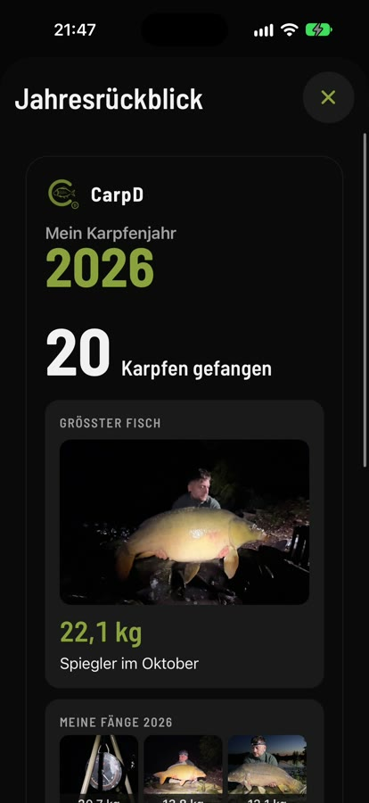

Every bite counts.
Your water. Your data. Your next fish.
CarpD is the app made just for carp fishing. Weather, pressure trend and bite index at a glance on the bank. Log runs and catches with one tap – time and weather are saved for you. Made for the night and for wet hands.
Free test phase from 1 January 2027, for iPhone and Android.
Launch in the App Store and on Google Play on 1 March 2027.
- 13countries with waters
- 10languages
- By carp anglers for carp anglers
Your swims stay secret.
A good swim is the most valuable thing a carp angler has. That is why CarpD is built from the ground up to keep it with you.
Stays on your phone
- Catches with the exact spotFor every catch you decide whether and with whom you share it. The default is always: private.
- Your swimsDepth, bottom, distance in metres or wraps, marker point and baiting plan.
- Photos and notesWithout an account, none of it goes to a server. With an account and cloud backup, only you can see them.
Never goes to others
- The location of your swimNot in your crew and not in the anonymous statistics either. At most the name of the water appears there.
- Location in shared photosPhotos for your crew carry no GPS data, and you can blur the bank, trees and houses in the background with your finger.
- Bait, rig and notesYou keep them to yourself, even when you show a catch in your crew.
Delayed sharingShow catches only after the session or 3, 7 or 14 days later, when you are long gone.
No ads, no trackingNo ad networks, no analytics tools, no selling of data. Not on this website either.
Servers in GermanyIf you choose to use an account, your data is stored in Frankfurt am Main. Deleting your account deletes everything, immediately.
Everything you need on the bank.
Just for carp fishing, without clutter from other kinds of fishing. In the order you need it: from planning to looking back.
Before
Plan what comes along.
- Water map. Lakes, ponds, rivers and canals in 13 countries on the satellite map, even without signal.
- DirectionsNEW Tap a lake, press “Directions”, and Apple Maps or Google Maps takes you there. Straight to your swim if you like.
- CalendarNEW Trips for the whole year, with weather forecast and your past sessions in the month view.
- Bait calculatorNEW How much bait for your trip? Estimates based on water temperature – and it learns from your sessions.
- Kit list and licences. Tick things off, with your own templates, and a reminder before your licence runs out.

On the bank
Everything at a glance.
- Pressure trend. Rising, falling or steady, over 3 days, 24 and 3 hours. Plus wind with a direction arrow.
- Bite index. When is it worth it? From pressure, weather, moon and water temperature, with the best time of the next 24 hours. An estimate that learns from your own runs.
- Water temperature, sun and moon. Estimated for your water, plus sunrise and sunset, moon phase and moon times.

When it beeps
One tap per rod.
- Bite log. One big button per rod: run, missed run, fish lost – with time and weather.
- Catch in seconds. Tap weight, species, rod and bait. CarpD saves time, place and weather automatically – and with “5 minutes ago” the time is right even after unhooking.
- Self-timer catch photo. Countdown with a beep and burst mode, then you pick the best shot.

Afterwards
See what really catches.
- Catch book and statistics. Biggest fish, catches per bait, by pressure trend and time of day. You see what works for you.
- My swims. Your spots with distance in metres or wraps (9 to 13 ft) and GPS.
- Year in review. Your carp year as an image to share.
Made for the night.
Red light mode: the whole app in red on black, so you are not dazzled at night – and neither are the anglers in the next swim. If you like, CarpD switches over by itself at sunset.
Big buttonsFor wet hands and little typing.
No signal neededEverything works offline. CarpD fetches missing weather later.
WarningsThe app alerts you to thunderstorms, gales and sudden weather changes.

CarpD in 6 minutes.
The big tour: every feature in 24 short chapters, from Today and the water map to catch book, planner and red light. (The phone screens still show the app in German – CarpD is fully available in English.)
Music: “Arcadia” and “Unity” by Kevin MacLeod (incompetech.com), licence CC BY 4.0. Sample data, waters chosen freely.
Crews: just your mates.NEW
Closed groups of up to 20 anglers. What is shared there, nobody else sees. Nothing is public.
- Share catches, give Tight LinesPhoto, species, weight and water – never your swim, your bait or your rig.
- Who is on the bank when?Show trips in your crew and head out together with “I’m in” – lift sharing included.
- Invite by code onlyThe boss and admins invite. Reporting and blocking work at any time.
Good questions.
The five questions we hear most. Everything else is answered in the help centre and by our assistant “Ask CarpD”.
Are my swims protected?
Yes. Swims and exact locations never leave your phone – except in your private cloud backup, which only you can access. Crews only see the name of the water, the anonymous statistics only the water, never the spot on the bank.
Where is my data stored?
Everything you enter stays on your phone. Only if you use an account (crews, cloud backup) or switch on the anonymous statistics does anything reach our server: Supabase in a data centre in Frankfurt am Main, Germany.
How much is CarpD Pro?
£43.99 a year (that is £3.67 a month) or £5.49 a month, with the first month free. Payment is handled by the App Store or Google Play. On the waiting list you get the founder price of £34.99 a year.
Does CarpD work without signal?
Yes. Sessions, runs, catches, photos, catch book, swims and licences all work offline, and the waters of 13 countries are in the app. If the weather is missing for a catch, CarpD fetches it as soon as you have signal again.
How do I delete my account?
In the app under More → Account → “Delete account”. Your account and everything linked to it is deleted from the server immediately – including cloud backups and anything shared in crews. Everything on your phone stays.
100
Test anglers wanted.
100 spots for anglers in England: test CarpD from 1 January 2027 on iPhone or Android. As a thank you, you get CarpD free for one year, with all features.
- Sign upEnter your email, choose your phone and confirm the email we send you.
- InvitationFrom 1 January 2027 your invitation arrives, via TestFlight (iPhone) or Google Play (Android).
- Fish and give feedbackUse CarpD on your sessions and tell us right in the app what works and what is missing.
Test phase full – thanks for your interest!
All 100 spots are taken. Secure the founder price now.
Secure founder priceWho is behind it?
We are Davide and Kresimir, carp anglers ourselves, from Germany. We know the problems on the bank first-hand – like not knowing at three in the morning which rod just went off. With CarpD we are building the app that does exactly what you need for carp fishing. Your feedback as test anglers goes straight into the app.
Tight Lines!